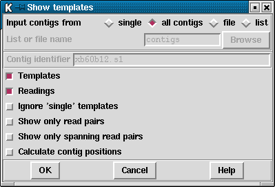

The Template Display can show schematic plots of readings, templates, tags, restriction enzyme sites and the consensus quality. It can be used to reorder contigs, create tags and invoke the Contig Editor. It is invoked from the main gap4 View menu.
An example showing all these information types can be seen in the Figure below.
The large top section contains lines and arrows representing readings
and templates. Beneath this are rulers;
one for each contig, and below those is the quality plot.
The template and reading section of the display is in two parts. The top
part contains the templates which have been sequenced from both ends but
which are in some way inconsistent - for example given the current
relative positions of their readings, they may have a length that is
larger or greater than that expected, or the two readings may, as it
were, face away from one another. Colour coding is used to distinguish
between different types of inconsistency, and whether or not the
inconsistency involves readings within or between contigs. For example,
most of the problems shown in the screendump above are coloured
dark yellow, indicating an inconsistency between a pair of contigs.
The rest of the data, (mostly dark blue indicating templates sequenced
from only one end), is plotted below the data for the inconsistent
templates.
Forward readings are blue and reverse readings are orange.
Templates in bright yellow have been sequenced from both ends, are consistent and
span a pair of contigs (and so indicate the relative orientation and
separation of the contigs).
The coloured blocks immediately above and below the ruler are tags.
Those above the ruler
can also be seen on their corresponding readings in the large top
section. Zooming is available. The position of a crosshair
is shown in the two left most boxes in the top right hand corner. The leftmost
shows the distance in bases between the crosshair and the start of the contig
underneath the crosshair. The middle box shows the distance between the
crosshair and the start of the first contig. The right box shows the distance
between two selected cut sites in the restriction enzyme plots.

As seen in the dialogue above,
users can choose to display a single contig, all contigs, or a subset of
contigs from a file of filenames ("file") or a list ("list"). If either the
file or list options are chosen, the "browse" button will be activated and can
be used to call up a file or list browser dialogue.
The items to be shown in the initial template display can be selected from the
list of checkboxes. The default is to display all templates and readings.
However, it is possible to display only templates with more than one reading
("Ignore 'single' templates) or templates with both forward and reverse
readings ("Show only read pairs"). These latter two options may be beneficial
if the database is very large.
In the section below we give details about the individual components of
the overall Template Display.
![[picture]](template.display,6in.png.html)
(Click for full size image)
Last generated on 25 April 2016.